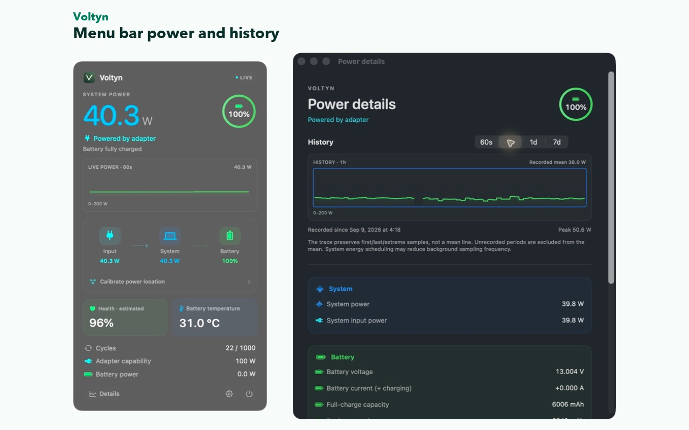
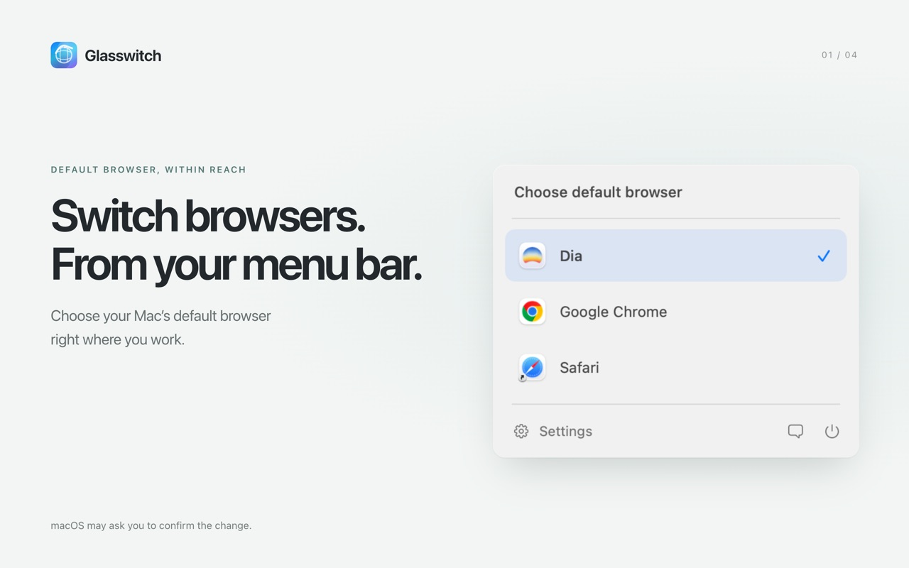
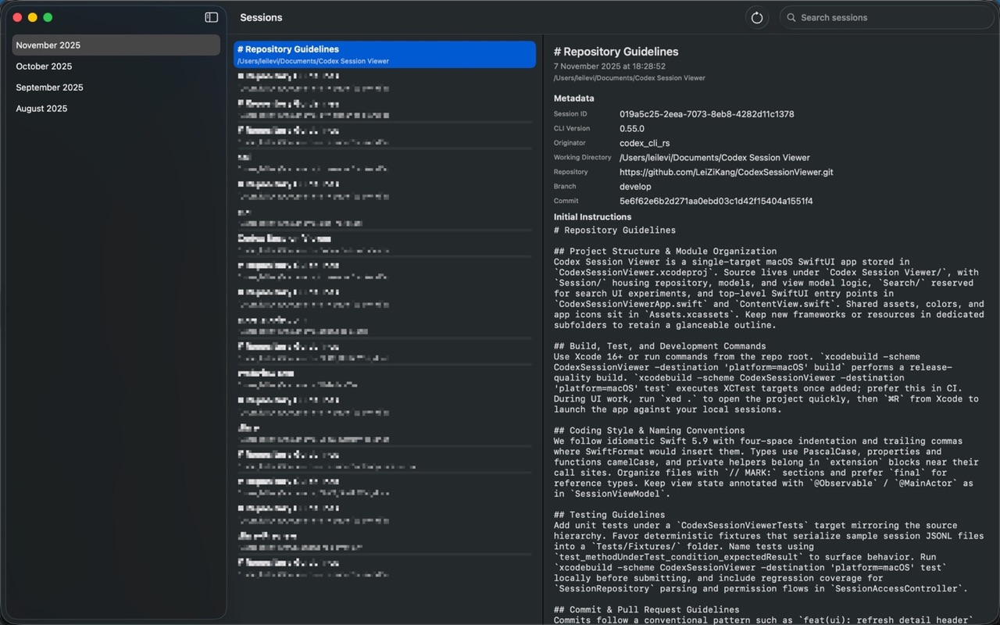
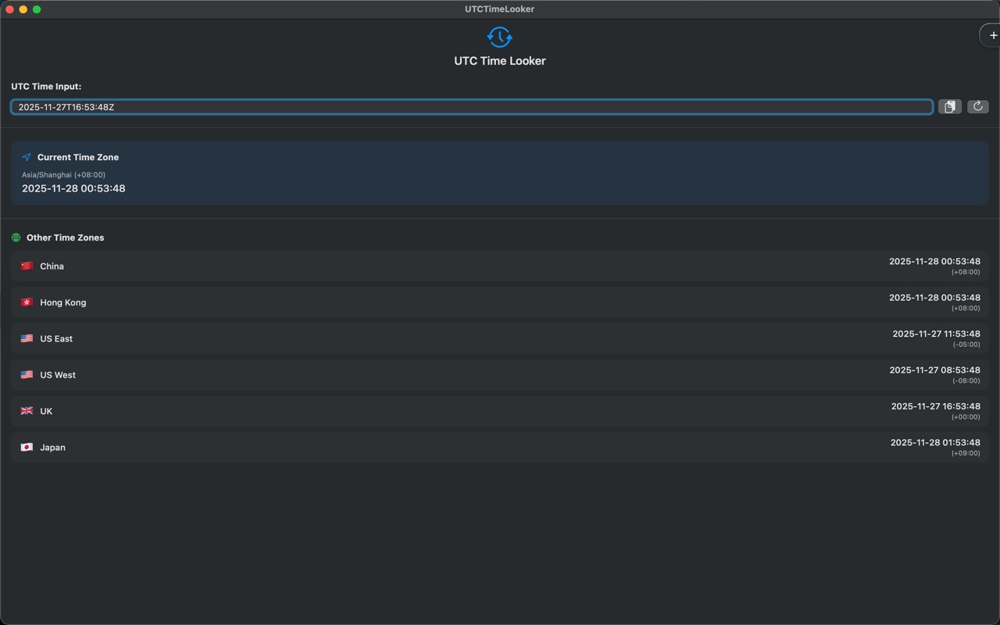
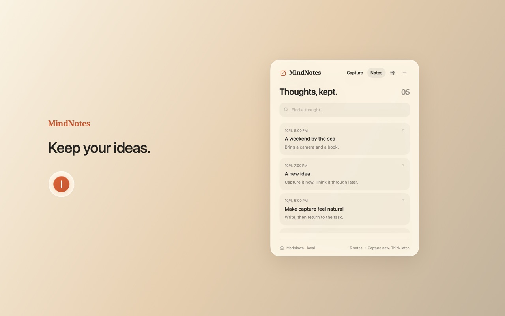

Building the Screens Before the Backend Is Ready: an API Mock Kit on URLProtocol
Intercept requests at the network layer and return local JSON per route, with switchable loading, 401, 500 and timeout states, so screens could ship before the backend.
iOS · Full-stack TypeScript · Shanghai
雷子康
I build native iOS and macOS apps in Swift, and the TypeScript services behind them. Three years of iOS. Two years of full-stack TypeScript. Five Mac apps on the Mac App Store. Looking for iOS or full-stack roles in Shanghai, Hangzhou, Suzhou, or remote in China.
Open to new roles · Shanghai / Hangzhou / Suzhou / Remote
Mac App Store launches, newest first. Four of the five shipped between Sep 8 and Oct 15, 2026.
Five Mac apps I build and maintain myself, using AI coding tools (Claude Code, Codex). All five are live on the Mac App Store. Glasswitch and Voltyn build on open-source code, credited on their cards.

Menu bar power monitor. Live system power with a 60-second trend, power flow, battery health and charging details, local history, and a desktop widget.
Reads battery and power-source data through IOKit, keeps history in SQLite, and hands a snapshot to the WidgetKit extension through an App Group. No account, no telemetry. The IOKit reading layer is derived from the MIT-licensed PowerTop and credited in the app.

Shows your Mac's default browser in the menu bar and switches the system HTTP / HTTPS handler to any installed browser. Stays in sync when the default is changed elsewhere.
Built on the open-source default-browser-switcher (MIT). My changes: a macOS 26 Liquid Glass interface, a sandboxed Mac App Store variant that uses only the public NSWorkspace API, English / Simplified Chinese UI, background sync with the system default, and the App Store release, website and support site.

Browses local Codex CLI session logs. Built in 2025, when Codex was CLI-only: it finds and parses the JSONL session archives, groups them by month and renders the full conversation timeline.
Asks for folder access once and keeps security-scoped bookmarks, so it does not prompt again. Source is public.

Converts UTC dates, ISO 8601 strings and Unix timestamps into local and other time zones as you type. I wrote it for reading UTC times in backend logs.
SwiftUI front end over a Foundation-based parser. The repo has unit tests for parsing, DST and UTC offsets. Open source (MIT).

A floating quick-capture button for the Mac: open it, write a thought, save, and get back to work. Drafts are kept automatically; saved notes can be searched, edited and copied.
Notes are stored as plain Markdown files on disk, viewable in Finder. English / Simplified Chinese, light / dark / system appearance, optional launch at login. No account, no network, no data collection.
At ESD Services Limited, delivering for Hong Kong clients with two to three projects in parallel. Clients are not named and no client code or screenshots are shown.
Also contributed to a hospitality enquiry and CMS platform (Next.js, Express, Prisma), and built Cloudflare and GitHub Actions deployment pipelines for the full-stack projects.
Open-source tools from how I work with Claude Code and Codex every day.
Engineering notes from client work and my own projects.
Intercept requests at the network layer and return local JSON per route, with switchable loading, 401, 500 and timeout states, so screens could ship before the backend.
Moving an old UIKit project's dependencies to Swift Package Manager, and why we rolled a thousand-file change back.
A protocol with a default implementation gave every web view screen a PDF download and share button in a few dozen lines.
A small Swift CLI that attaches the enclosing type and function to each lint finding and parses files in parallel.
One runtime hook on UIControl's action dispatch makes every button tap-safe, with the trade-offs.
A first-in, first-out queue that shows the next alert only after the previous one closes, pulled out into a small Swift package.
Moving a membership app's push from per-token sends to FCM topics: fixed and one-time topics, language splits, and reconciling subscriptions.
Debugging a push service that lost Redis after VNet integration routed outbound traffic through a NAT gateway.
One parameterised JMeter plan for smoke, load and stress runs against a Node.js membership API, and tracing every error back to its cause.
Open to iOS (Swift) and TypeScript full-stack roles in Shanghai, Hangzhou, Suzhou, or remote in China. The fastest way to reach me is a LinkedIn message or email.